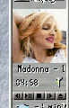

[outdated - this page is only here for historic reasons]

<table width="100%" border="0" cellpadding="2" cellspacing="1" summary="">
  <tr><td class="boxitem">
This is a simple plugin for gkrellm that displays a small icon/picture representing the song played by XMMS.<br>
Samlpe:<br>
<br>
</td></tr>
</table>

